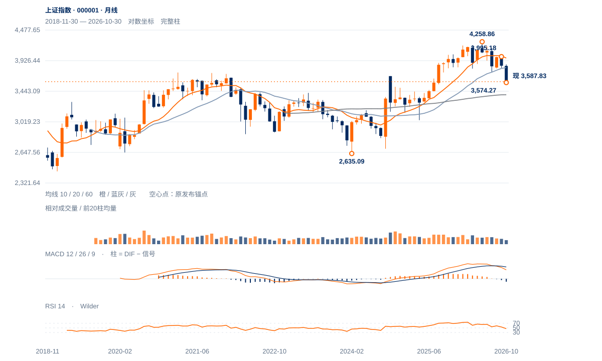

未来1—5日偏旧谷下方反复，反抽遇阻的解释维持；先区分3574—3580真正收回与仅盘中触碰。
上证指数 · 2026-11-24完整收盘
3585上试后退至3548，旧谷修复为何仍未完成？
3,548.37+0.27%
旧谷回抽与收盘保持
分期限展望
未来2—6周以3574—3580回抽后的重建为主。24日上试回吐增加旧谷供应证据；若后续收住3580并越3702—3708，才提高中期恢复判断，单独日内越谷尚不足以完成。
未来1—3个月仍观察2024—2026升波的深回撤。3812完整20月均衡在上方，3447—3392历史区域只作下层参照；先建立较高周谷并恢复3674—3732，才改善长期供应压制。

长期背景
2024年2635至2026年4259升波进入深回撤，3674—3732旧高带在上方，完整10月20月均衡3812尚未恢复。当前3574—3580旧谷回抽受阻，长期历史区域与日周下降约束并存。 当前日收盘3,548.37与完整10月月线分开观察；11月尚未结束。
中期结构与新证据
完整周线已更新至11月20日：2026-09-01高3,995.18（2026-09-18确认）；2026-09-22高3,967.68（2026-10-09确认）；2026-10-23低3,574.27（2026-11-06确认）。最新一周与上次11月20日背景分别保存；24日国内与23日美股仅为本周进行中观察。24日最高3585.22越过3574.27—3580.38两旧谷，收盘3548.37又回到其下，日幅位置仅20%。23日3476.65探低回收后，首次向旧支撑推进缺乏收盘保持；当日量约前20日1.04倍，未见异常量高潮。全市场上涨占比由83.64%降至35.00%，回收的参与面收窄。
确认与失效
3574—3580日收恢复并后续保持，再评估3702—3708中峰。
3476.65再失扩大近期下行；20日原3574日收失效保留。
主要反方
今日未创新低且仍小幅收涨，连续守住3539附近并收回3580，会削弱反抽受阻判断。
波动与量能
RSI14 33.04；ATR14 51.86；相对量1.04倍